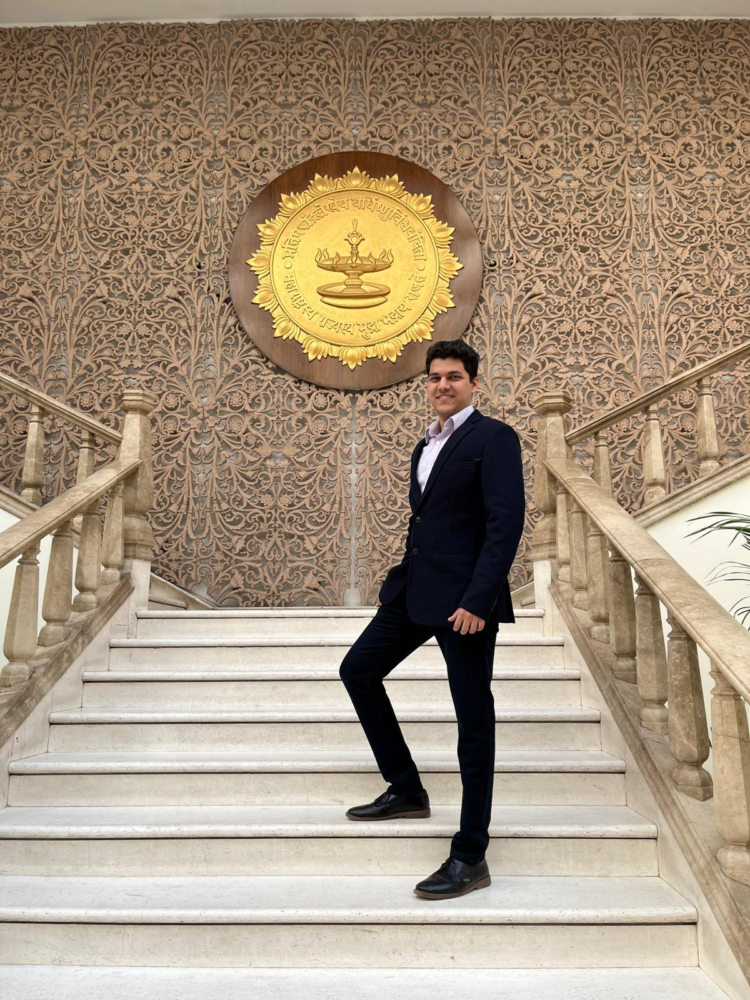

About me

Greetings! I'm Harshal, a dedicated graduate student pursuing a Master's degree in Robotics at the esteemed Worcester Polytechnic Institute in MA. My journey into the fascinating realm of Robotics has ignited a profound enthusiasm within me, particularly in the domains of Control Theory, Perception, and Reinforcement Learning.My eagerness to explore extends to projects, especially those that delve into the realm of Autonomous cars, UAVs where I aspire to not only align with these captivating fields but also engage in innovative algorithmic solutions for complex challenges. I am eager to collaborate on projects that not only align with these areas of interest but also challenge me to create innovative algorithms to tackle intricate problems.
I am actively seeking internship opportunities for Summer 2024. As a dynamic individual, I excel in roles that demand responsibility and leadership. My academic journey bears testament to my unwavering commitment, as I have consistently organized workshops and events, led numerous projects to success, and even secured a startup grant along the way.
Education
Master's in Robotics Engineering
Worcester Polytechnic Institute
GPA: 4.00
Bachelor's of Technology in Mecahnical Engineering
Veermata Jijabai Technological Institute(VJTI), Mumbai University
GPA: 8.28/10.0
Work
Technology Consultant: Software Development, PwC India LLP
Worked extensively on AWS cloud migration and pipeline for 50 procedures Environment setup and end-to-end migration of 50 Qlik applications and formulated data visualizations.
Contributed to Spark scripts in AWS Atena and optimized AWS Redshift performance by 60% faster query response. Gained familiarity with Docker, Bitbucket, JIRA, Confluence, and creating clean, modular, scalable software.
Research and Development Intern - IIT Ropar
Mentored by Dr. Dhiraj Mahajan and Dr. Pushpendra Singh.Designed and implemented an autonomous harvester capable of navigating in unknown environments and harvesting 15 different crop vegetables, utilizing AMCL and odometry data. Enabled navigation in unknown environments using IMU, GPS,& encoder data, integrated with ROS packages RVizSatellite & mapviz connected to Google Maps API. Published 1 Patent at The Indian Patent Office Journal.
Patents and Publications
[2] “An Autonomous System For Low Payload Gripper Changing Mechanism and its Method Thereof”
Published(Under examination) - The Indian Patent Office Journal No. 05/2022, Dated 04/02/2022, Part 1, pp. 24, Application no. (202211000649)
[2] “Automatic Harvester”
Published(Under examination) - The Indian Patent Office Journal No. 12/2022, Dated 25/03/2022, Part 4, pp. 92 Application no. (356209-001)
[2] “Vibration Analysis of Hydrodynamic Conical Journal Bearing and Fault Prediction using Machine Learning”
Speaker as 1st Author - In Proceedings of the International Conference on Industrial Tribology (ICIT),2022, New Delhi
Research Experience
Decentralised Multi-agent Formation control and simultaneous target localization - Dr. Siavesh Farzan
Working on implementing novel localization algorithms based on consensus for multi-agent systems under localization errors like UAVs and warehouse robots. Implementing Unscented Distributed Kalman filtering approach taking robust measures into account.
Robot Research Intern - Dr. Arpita Sinha
My research internship at IIT Bombay gave me insights into Motion planning algorithms. My work was focused on implementation of quintic Bezier curves for smooth trajectory generartion for Autonomous Driving DRL. This was simulated in CARLA simulator
Projects

3D Stereo Vision for Pseudo Lidar -Github
I developed a 3D Computer Vision pipeline, implementing disparity maps, 3D obstacle estimation, and 3D Point Cloud creation from Stereo Images. Utilized Stereo SGBM algorithms from OpenCV and integrated camera calibration for depth mapping. Caalculated disparity to depth and reprojected Image to 3D for obstacle detection along with distances.

Road Segmentation Model for Autonomous Driving - Github
I trained a Deep Learning model having encoder decoder and skip connections architecture for road segmentation for video feed. I used the Berkeley BDK100 dataset for training and validation. The test set was a custom video from actual roads in Paris. The vision system was able to segment drivable area with a 95% accuracy rate.
Bicycle Tracking Using Unscented Kalman Filter - Github
This project focuses on utilizing the Kalman filter to track a bicycle's movement in a surveillance video captured from a stationary camera. The video contains several challenges, including linear movement, abrupt turns, occlusion by objects (e.g., light posts), and occasional issues with object detection. I aimed to enhance the tracking accuracy and robustness by implementing the Kalman filter.
Zero-Shot Semantic Neural style Trasfer - Github
We implemented a novel architecture for Neural Style Transfer based on Unseen content images. The content and style image are encoded using a VGG19 backbone, pretrained on ImageNet dataset. The default content-style attention map is generated using AdaAttN. The attention map generated is then fused with controlling signals from the segmentation mask of the content image. The stylized feature is computed given the updated attention map, and the final stylized image is generated by passing through a VGG decoder followed by new encoder and perpetual loss is calculated.

Robust Interception and Tracking for Quadrotor UAV - Github
This project aimed at designing a controller for the quadrotor to intercept and catch an alient UAV in defined space. First, I added an Linear Quadratic controller for hovering and interception, tuned the controller using state-of-the-art techniques and simulated in MATLAB
- Adaptive Cruise Control System using MATLABGithub
{kind=link}
I designed an Adaptive cruise control in MATLAB/Simulink using a linear Model Predictive Controller(MPC) using transfer functions to regulate the accelerator pedal sequence. The behavior of the follower vehicle was regulated by the set-point reference velocity and intervehicular distance, 3 different states were modeled in the stateflow designer

Vibration Analysis of Hydrodynamic Conical Journal Bearing using Machine Learning - Undergrad Thesis
We performed conditional monitoring for a conical journal bearing using C++, MATLAB and various machine learning metods.
We give a comparative analysis of CNNs, SVMs, RF, KNN methods for prediction of the Bearing health. A dynamic model of the lubrication system was also propsed in this thesis to explain the vibration signal peaks in the FFT for vibration data. The research was presented at International conference for Industrial Tribology.
Technical Skills
ROS2
MATLAB
AWS
ARGoS
AirSim
CARLA
Python
C++
OpenCV
PL/SQL
Git
College Experience
Graduate Student Researcher - WPI
Robosumo Head, Technovanza VJTI, Mumbai
Core Team Member, SAE VJTI Racing
Internshala Studnet Parnter - VJTI Campus
Honours
1st Runner up IEEE VJTI technical paper presentation
Best Paper for Robust behavioral cloning of human drivers using end-to-end imitation learning for autonomous vehicles
Startup Grant, TIF-AWaDH, IIT Ropar
Received a startup grant of 12000 USD for autonomous harvesting robot business idea